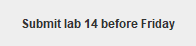
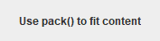

เมื่อจบบทนี้ นิสิตจะทำได้- อธิบาย JFrame, container และ component
- สร้างหน้าต่างและกำหนดการปิด
- เพิ่ม JPanel เป็นพื้นที่จัดกลุ่ม component
- เริ่ม GUI บน Event Dispatch Thread
14. จากผลลัพธ์ใน console สู่หน้าต่าง GUI
GUI (Graphical User Interface) ให้ผู้ใช้เห็นหน้าต่าง ปุ่ม ช่องกรอกข้อมูล และผลลัพธ์ แทนการพิมพ์คำสั่งใน console Swing (แพ็กเกจ javax.swing) เป็นชุด component มาตรฐานใน Java SE สำหรับสร้าง GUI
เกี่ยวกับภาพผลลัพธ์ในบท GUIภาพหน้าต่างทางขวาของทุกตัวอย่างถ่ายจากการรันโค้ดนั้นจริง (ใช้ look and feel มาตรฐานของ Swing ชื่อ Metal) แถบชื่อหน้าต่างวาดเพิ่มให้ดู ถ้ารันบนเครื่องของนิสิต กรอบหน้าต่างจะเป็นแบบของระบบปฏิบัติการ แต่เนื้อหาภายในเหมือนกัน บางตัวอย่างมีภาพ “หลังผู้ใช้กระทำ” ซึ่งได้จากการจำลองพิมพ์/คลิกด้วยโปรแกรม
14.1 หน้าต่าง, container และ component
JFrame เป็นหน้าต่างหลัก; container (เช่น JPanel) ใช้บรรจุและจัดกลุ่ม component; component คือสิ่งที่มองเห็นหรือโต้ตอบได้ เช่น label, button และ text field
แผนผังส่วนประกอบ (component tree)แผนภาพ
JFrame (หน้าต่าง)
└── content pane / JPanel (พื้นที่จัดกลุ่ม)
├── JLabel (ข้อความ)
├── JTextField (ช่องกรอก)
└── JButton (ปุ่มกด)
หน้าต่างทำหน้าที่เป็น root container; เรามักเพิ่ม JPanel ก่อน แล้วใส่ component ลงใน panel เพื่อจัด layout
Console กับ GUI ต่างกันอย่างไร
| Console | GUI |
|---|
| ลำดับการทำงาน | โปรแกรมกำหนด: ถาม → รอ → ถามต่อ | ผู้ใช้กำหนด: คลิก/พิมพ์อะไรก่อนก็ได้ |
| รับข้อมูล | Scanner อ่านทีละบรรทัด | อ่านจาก component เมื่อเกิดเหตุการณ์ |
| แสดงผล | println ต่อท้ายไปเรื่อย ๆ | เปลี่ยนข้อความใน label/area ที่มีอยู่ |
| โครงสร้างโค้ด | main ทำงานจากบนลงล่างจนจบ | main สร้างหน้าต่างแล้วจบ ที่เหลือขับเคลื่อนด้วย event |
ตัวอย่าง 14.1.1เทียบโปรแกรมเดียวกัน: เวอร์ชัน console
แนวคิด: โปรแกรม console ทำงานตามลำดับที่เขียน ผลลัพธ์ต่อท้ายใน console
ConsoleGreeting.java
public class ConsoleGreeting {
public static void main(String[] args) {
String name = "Mali";
// โปรแกรม console: แสดงผลเป็นข้อความ
System.out.println("Welcome to Java GUI course");
System.out.println("Student: " + name);
}
}
ผลลัพธ์Welcome to Java GUI course
Student: Mali
อธิบายทีละขั้น- ทำบรรทัดแรก แล้วบรรทัดถัดไป จนจบ main
- ไม่มีหน้าต่าง ผลลัพธ์อยู่ใน console
ตัวอย่าง 14.1.2เวอร์ชัน GUI: ข้อความเดียวกันในหน้าต่าง
แนวคิด: สร้าง JFrame ใส่ JLabel สองตัวลงใน JPanel แล้วแสดงหน้าต่าง — ข้อความอยู่ในหน้าต่างแทน console
GuiGreeting.java
import javax.swing.*; // * = import ทุกคลาสในแพ็กเกจ swing
public class GuiGreeting {
public static void main(String[] args) {
// สร้าง GUI บน Event Dispatch Thread
SwingUtilities.invokeLater(() -> {
// หน้าต่างพร้อมชื่อบนแถบหัว
JFrame frame = new JFrame("Greeting");
// ปิดหน้าต่างแล้วจบโปรแกรม
frame.setDefaultCloseOperation(JFrame.EXIT_ON_CLOSE);
// แผงสำหรับวาง component
JPanel panel = new JPanel();
// ป้ายข้อความ
panel.add(new JLabel("Welcome to Java GUI course"));
panel.add(new JLabel("Student: Mali"));
frame.add(panel); // วางแผงลงในหน้าต่าง
// ปรับขนาดหน้าต่างให้พอดีเนื้อหา
frame.pack();
// แสดงหน้าต่าง (ต้องเรียกท้ายสุด)
frame.setVisible(true);
});
}
}
หน้าต่างที่ได้ (ภาพจากโปรแกรมจริง) อธิบายทีละขั้นimport javax.swing.*; นำเข้าคลาส Swing ทั้งหมด- สร้างหน้าต่าง → สร้าง panel → ใส่ label → ใส่ panel ลงหน้าต่าง
pack() ปรับขนาดพอดีเนื้อหา แล้ว setVisible(true) แสดง- main จบทันที แต่หน้าต่างยังอยู่จนกว่าผู้ใช้จะปิด
ลองคิดก่อน · บทบาทในหน้าจอ login: กรอบหน้าต่าง, พื้นที่จัดกลุ่ม, คำว่า “Username”, ช่องพิมพ์ชื่อ, ปุ่ม Login ตรงกับคลาสใดของ Swing
ดูคำตอบ
JFrame, JPanel, JLabel, JTextField, JButton ตามลำดับ
14.2 สร้าง JFrame และกำหนดวงจรชีวิต
ลำดับการเปิดหน้าต่าง- สร้าง
new JFrame("ชื่อหน้าต่าง") - กำหนดการปิด
setDefaultCloseOperation(JFrame.EXIT_ON_CLOSE) — ไม่เช่นนั้นปิดหน้าต่างแล้วโปรแกรมยังทำงานค้าง - เพิ่ม content และ component
- กำหนดขนาด:
setSize(w, h) หรือ pack() - วางตำแหน่ง
setLocationRelativeTo(null) (กลางจอ) - เรียก
setVisible(true) เป็นขั้นสุดท้าย
ตัวอย่าง 14.2.1หน้าต่างขั้นต่ำด้วย setSize
แนวคิด: หน้าต่างว่างที่มีขนาดตามที่กำหนด — เป็นโครงเริ่มต้นของทุกโปรแกรม GUI
FirstWindow.java
import javax.swing.JFrame; // import ทีละคลาส
import javax.swing.SwingUtilities;
public class FirstWindow {
public static void main(String[] args) {
// ส่งงานสร้าง GUI ให้ EDT
SwingUtilities.invokeLater(() -> {
JFrame frame = new JFrame("My First GUI");
frame.setDefaultCloseOperation(JFrame.EXIT_ON_CLOSE);
// กว้าง 360 สูง 160 พิกเซล
frame.setSize(360, 160);
// null = กึ่งกลางจอ
frame.setLocationRelativeTo(null);
frame.setVisible(true);
});
}
}
หน้าต่างที่ได้ (ภาพจากโปรแกรมจริง)My First GUI

อธิบายทีละขั้น- ชื่อหน้าต่างปรากฏในแถบด้านบน
- ขนาด 360 × 160 พิกเซลรวมขอบหน้าต่าง
- EXIT_ON_CLOSE จบโปรแกรมเมื่อกดปิด
ตัวอย่าง 14.2.2setSize กับ pack()
แนวคิด: pack() คำนวณขนาดจาก preferred size ของ component ข้างใน — ได้หน้าต่างที่พอดีเนื้อหาไม่ว่าฟอนต์ของเครื่องจะเป็นแบบไหน
PackDemo.java
import javax.swing.*;
public class PackDemo {
public static void main(String[] args) {
SwingUtilities.invokeLater(() -> {
JFrame frame = new JFrame("Packed");
frame.setDefaultCloseOperation(JFrame.EXIT_ON_CLOSE);
JPanel panel = new JPanel();
panel.add(new JLabel("This window is exactly as big as its content."));
frame.add(panel);
frame.pack(); // ขนาดพอดีกับ label
frame.setLocationRelativeTo(null);
frame.setVisible(true);
});
}
}
หน้าต่างที่ได้ (ภาพจากโปรแกรมจริง)Packed

อธิบายทีละขั้น- ไม่ได้กำหนดขนาดเอง
- pack() ถามขนาดที่ต้องการของ panel และ label แล้วปรับหน้าต่างให้พอดี
- ถ้าเพิ่ม component ต้องเรียก pack() หลัง add ทั้งหมด
ตัวอย่าง 14.2.3คลาสที่สืบทอด JFrame
แนวคิด: โปรแกรม GUI ขนาดใหญ่นิยมสร้างคลาสของหน้าต่างเองด้วย extends JFrame แล้วจัดหน้าจอใน constructor (ใช้ inheritance จากบทที่ 12)
ProfileWindow.java
import javax.swing.*;
// extends JFrame: คลาสนี้คือหน้าต่าง
public class ProfileWindow extends JFrame {
public ProfileWindow(String student) {
// ชื่อหน้าต่าง ส่งให้ constructor ของ JFrame
super("Student Profile");
setDefaultCloseOperation(JFrame.EXIT_ON_CLOSE);
JPanel panel = new JPanel();
panel.add(new JLabel("Name: " + student));
panel.add(new JLabel("Faculty: Science"));
add(panel); // เรียก add ของตัวเองได้ตรง ๆ
setSize(320, 100);
setLocationRelativeTo(null);
}
public static void main(String[] args) {
// สร้างและแสดงบน EDT
SwingUtilities.invokeLater(() -> new ProfileWindow("Mali").setVisible(true));
}
}
หน้าต่างที่ได้ (ภาพจากโปรแกรมจริง) อธิบายทีละขั้นsuper("Student Profile") ส่งชื่อหน้าต่างให้ constructor ของ JFrame- เรียก setSize, add ได้ตรง ๆ เพราะเป็นเมธอดที่สืบทอดมา
- constructor รับ parameter ได้ ทำให้สร้างหน้าต่างหลายแบบจากคลาสเดียว
- main เหลือบรรทัดเดียว
ค่าที่ใช้กับ setDefaultCloseOperationEXIT_ON_CLOSE — ปิดหน้าต่างแล้วจบโปรแกรม (ใช้กับหน้าต่างหลัก)DISPOSE_ON_CLOSE — ปิดเฉพาะหน้าต่างนี้ (ใช้กับหน้าต่างรอง บทที่ 18)HIDE_ON_CLOSE — ค่าเริ่มต้น ซ่อนหน้าต่างแต่โปรแกรมยังทำงาน (มักเป็นบั๊กสำหรับผู้เริ่มต้น)
ลองคิดก่อน · ลำดับถ้าเรียก setVisible(true) ก่อน add(panel) และไม่เรียก pack() อาจเกิดอะไรขึ้น
ดูคำตอบ
หน้าต่างอาจแสดงว่างหรือขนาดผิด เพราะ component ถูกเพิ่มหลังจากหน้าต่างคำนวณ layout ไปแล้ว — จึงควรตั้งค่าทุกอย่างก่อน setVisible(true) (ถ้าจำเป็นต้องเพิ่มทีหลังให้เรียก revalidate() และ repaint())
14.3 JPanel เป็น container สำหรับ component
เพิ่ม component ลง panel แล้วเพิ่ม panel ไปใน frame ทำให้เปลี่ยน layout หรือสลับเนื้อหาได้ง่าย แต่ละ container มี layout manager คอยจัดตำแหน่ง JPanel ใช้ FlowLayout เป็นค่าเริ่มต้น (เรียงซ้ายไปขวา ขึ้นบรรทัดใหม่เมื่อเต็ม) บทที่ 15 จะเรียน layout อื่น ๆ
ตัวอย่าง 14.3.1หลาย component ใน panel เดียว
แนวคิด: FlowLayout วาง component ตามลำดับที่ add จากซ้ายไปขวา
LoginPanel.java
import javax.swing.*;
public class LoginPanel {
public static void main(String[] args) {
SwingUtilities.invokeLater(() -> {
JFrame frame = new JFrame("Login");
frame.setDefaultCloseOperation(JFrame.EXIT_ON_CLOSE);
// JPanel เรียง component ซ้ายไปขวา
JPanel panel = new JPanel();
panel.add(new JLabel("Username:"));
// ช่องกรอกกว้างประมาณ 10 ตัวอักษร
panel.add(new JTextField(10));
panel.add(new JButton("Login")); // ปุ่ม
frame.add(panel);
frame.pack();
frame.setVisible(true);
});
}
}
หน้าต่างที่ได้ (ภาพจากโปรแกรมจริง) อธิบายทีละขั้น- JTextField(10) กำหนดความกว้างประมาณ 10 ตัวอักษร
- ลำดับ add = ลำดับบนหน้าจอ
- ยังกดปุ่มแล้วไม่มีอะไรเกิดขึ้น — บทที่ 16 จะเพิ่ม event
ตัวอย่าง 14.3.2ตกแต่ง panel: สีพื้นหลัง ขอบ และฟอนต์
แนวคิด: component มีเมธอดปรับหน้าตา เช่น setBackground, setForeground, setFont และ setBorder
StyledPanel.java
import javax.swing.*;
import java.awt.*;
public class StyledPanel {
public static void main(String[] args) {
SwingUtilities.invokeLater(() -> {
JFrame frame = new JFrame("Styled");
frame.setDefaultCloseOperation(JFrame.EXIT_ON_CLOSE);
JPanel panel = new JPanel();
// สีพื้นหลัง (R, G, B)
panel.setBackground(new Color(229, 244, 207));
// ระยะขอบ บน ซ้าย ล่าง ขวา
panel.setBorder(BorderFactory.createEmptyBorder(16, 24, 16, 24));
JLabel title = new JLabel("Java Cafe");
// ฟอนต์ ตัวหนา ขนาด 22
title.setFont(new Font("SansSerif", Font.BOLD, 22));
// สีตัวอักษร
title.setForeground(new Color(8, 125, 134));
panel.add(title);
frame.add(panel);
frame.pack();
frame.setVisible(true);
});
}
}
หน้าต่างที่ได้ (ภาพจากโปรแกรมจริง) อธิบายทีละขั้นnew Color(r, g, b) กำหนดสีด้วยค่า 0–255 (ต้อง import java.awt.*)- EmptyBorder เว้นระยะขอบ บน-ซ้าย-ล่าง-ขวา
- Font(ชื่อ, รูปแบบ, ขนาด) — BOLD, ITALIC, PLAIN
ตัวอย่าง 14.3.3panel ซ้อน panel: แยกส่วนหัวกับส่วนเนื้อหา
แนวคิด: panel ใส่ใน panel ได้ ทำให้แบ่งหน้าจอเป็นส่วน ๆ แต่ละส่วนตกแต่งแยกกันได้ ในตัวอย่างใช้ BorderLayout ของ frame วางส่วนหัวด้านบนและเนื้อหาตรงกลาง
NestedPanels.java
import javax.swing.*;
import java.awt.*;
public class NestedPanels {
public static void main(String[] args) {
SwingUtilities.invokeLater(() -> {
JFrame frame = new JFrame("Course Card");
frame.setDefaultCloseOperation(JFrame.EXIT_ON_CLOSE);
JPanel header = new JPanel(); // แผงส่วนหัว
header.setBackground(new Color(32, 44, 40));
JLabel title = new JLabel("CS101 Programming");
title.setForeground(Color.WHITE);
header.add(title);
JPanel body = new JPanel(); // แผงเนื้อหา
body.add(new JLabel("Credits: 3"));
body.add(new JLabel("Seats: 40"));
body.add(new JButton("Enroll"));
// วางแผงหัวไว้ด้านบนของหน้าต่าง
frame.add(header, BorderLayout.NORTH);
// แผงเนื้อหาอยู่ตรงกลาง
frame.add(body, BorderLayout.CENTER);
frame.pack();
frame.setVisible(true);
});
}
}
หน้าต่างที่ได้ (ภาพจากโปรแกรมจริง) อธิบายทีละขั้น- header และ body เป็น panel แยกกัน
- content pane ของ JFrame ใช้ BorderLayout: NORTH คือแถบบน, CENTER คือพื้นที่หลัก
- เปลี่ยนสีหัวได้โดยไม่กระทบเนื้อหา
ลองคิดก่อน · FlowLayoutถ้าหน้าต่าง FlowLayout แคบเกินไปสำหรับ component ทั้งหมดในแถวเดียว จะเกิดอะไรขึ้น
ดูคำตอบ
component ที่ไม่พอจะถูกย้ายไปบรรทัดถัดไป (wrap) — ถ้าหน้าต่างสูงไม่พอก็จะมองไม่เห็นบางส่วน จึงควรใช้ pack() หรือ layout ที่เหมาะสม
14.4 Event Dispatch Thread (EDT)
Swing ไม่ปลอดภัยต่อการใช้งานจากหลาย thread พร้อมกัน ทุกการสร้างและแก้ไข component ต้องทำบน Event Dispatch Thread (EDT) ซึ่งเป็น thread เดียวที่วาดหน้าจอและประมวลผลเหตุการณ์ วิธีมาตรฐานคือห่อโค้ดสร้าง GUI ด้วย SwingUtilities.invokeLater(() -> { ... });
invokeLater ทำอะไรแผนภาพ
main thread Event Dispatch Thread
─────────── ─────────────────────
main() เริ่ม
invokeLater(งานสร้าง GUI) ──────▶ คิวงาน: [สร้าง GUI]
main() จบ ทำ "สร้าง GUI" → แสดงหน้าต่าง
รอ event: คลิก, พิมพ์, วาดใหม่ ...
() -> { ... } คือ lambda — “งานชิ้นหนึ่ง” ที่ส่งให้ EDT ทำภายหลัง จะเรียนละเอียดในบทที่ 16
ตัวอย่าง 14.4.1ดูชื่อ thread ที่ทำงาน
แนวคิด: แสดงว่าโค้ดใน invokeLater ทำงานบน thread ชื่อ AWT-EventQueue-0 ไม่ใช่ main
WhichThread.java
import javax.swing.*;
public class WhichThread {
public static void main(String[] args) {
// ชื่อ thread ที่รัน main
String mainThread = Thread.currentThread().getName();
SwingUtilities.invokeLater(() -> {
// ชื่อ thread ภายใน invokeLater
String edt = Thread.currentThread().getName();
JFrame frame = new JFrame("Threads");
frame.setDefaultCloseOperation(JFrame.EXIT_ON_CLOSE);
JPanel panel = new JPanel();
panel.add(new JLabel("main ran on: " + mainThread));
panel.add(new JLabel("GUI built on: " + edt));
// true = ทำงานบน EDT
panel.add(new JLabel("isEDT = " + SwingUtilities.isEventDispatchThread()));
frame.add(panel);
frame.setSize(260, 110);
frame.setVisible(true);
});
}
}
หน้าต่างที่ได้ (ภาพจากโปรแกรมจริง)Threads

อธิบายทีละขั้น- main ทำงานบน thread ชื่อ main
- โค้ดใน lambda ทำงานบน AWT-EventQueue-0 (EDT)
SwingUtilities.isEventDispatchThread() ใช้ตรวจได้ว่าอยู่บน EDT หรือไม่- สังเกต: setSize(260, …) แคบ FlowLayout จึงตัดขึ้นบรรทัดใหม่
ตัวอย่าง 14.4.2โครงโปรแกรม GUI มาตรฐานที่จะใช้ทั้งหน่วย
แนวคิด: แยกเมธอด createAndShowGui() แล้วให้ main เรียกผ่าน invokeLater — โครงนี้ใช้ได้กับทุกบทถัดไป
GuiTemplate.java
import javax.swing.*;
import java.awt.*;
public class GuiTemplate {
public static void main(String[] args) {
// ส่งชื่อเมธอดให้ EDT เรียก
SwingUtilities.invokeLater(GuiTemplate::createAndShowGui);
}
// เมธอดสร้างหน้าต่าง
private static void createAndShowGui() {
JFrame frame = new JFrame("App Template");
frame.setDefaultCloseOperation(JFrame.EXIT_ON_CLOSE);
// ใช้แผงที่สร้างจากอีกเมธอดเป็นเนื้อหา
frame.setContentPane(buildContent());
frame.pack();
frame.setLocationRelativeTo(null);
frame.setVisible(true);
}
// เมธอดสร้างเนื้อหา แยกจากการสร้างหน้าต่าง
private static JPanel buildContent() {
// BorderLayout เว้นระยะ 8 พิกเซล
JPanel panel = new JPanel(new BorderLayout(8, 8));
panel.setBorder(BorderFactory.createEmptyBorder(12, 12, 12, 12));
panel.add(new JLabel("Header goes here"), BorderLayout.NORTH);
// กล่องข้อความ 4 แถว 24 คอลัมน์
panel.add(new JTextArea("Main content area", 4, 24), BorderLayout.CENTER);
panel.add(new JButton("Action"), BorderLayout.SOUTH);
return panel;
}
}
หน้าต่างที่ได้ (ภาพจากโปรแกรมจริง) อธิบายทีละขั้นGuiTemplate::createAndShowGui คือ method reference — สั้นกว่าเขียน lambda- buildContent() คืน JPanel ที่จัดเสร็จแล้ว แยกส่วนสร้างหน้าตาออกจากส่วนตั้งค่าหน้าต่าง
- setContentPane แทนที่ content pane ด้วย panel ของเรา
งานหนักห้ามทำบน EDTถ้าโค้ดบน EDT ทำงานนาน (เช่น ลูปคำนวณหลายวินาที หรือ Thread.sleep) หน้าต่างจะค้าง กดอะไรไม่ได้ เพราะ EDT ไม่ว่างวาดหน้าจอ บทเสริม “Timer, Thread และ Swing” อธิบายวิธีแก้ด้วย Swing Timer และ SwingWorker
แบบฝึกหัดท้ายบท
ทุกข้อเป็นโปรแกรม GUI ให้รันแล้วเทียบหน้าต่างกับภาพตัวอย่าง (ขนาดและฟอนต์อาจต่างเล็กน้อยตามเครื่อง) ทุกโปรแกรมต้องสร้าง GUI ใน SwingUtilities.invokeLater
ระดับความยาก: ★ ง่าย★★ ปานกลาง★★★ ท้าทาย
Exercise 14.1หน้าต่าง Student Profile★ ง่าย
สร้างหน้าต่างชื่อ Student Profile ขนาด 400 × 150 เปิดกลางจอ และปิดแล้วจบโปรแกรม ภายในมีข้อความ Name: (ชื่อของคุณ)
สิ่งที่ต้องทำ- ใช้ setSize, setLocationRelativeTo(null), EXIT_ON_CLOSE
- ใส่ JLabel ผ่าน JPanel
ตัวอย่างหน้าจอ (ภาพจากโปรแกรมเฉลย) ตัวอย่างคำตอบ
StudentProfile.java
import javax.swing.*;
public class StudentProfile {
public static void main(String[] args) {
SwingUtilities.invokeLater(() -> {
JFrame frame = new JFrame("Student Profile");
frame.setDefaultCloseOperation(JFrame.EXIT_ON_CLOSE);
JPanel panel = new JPanel();
panel.add(new JLabel("Name: Mali Jaidee"));
frame.add(panel);
frame.setSize(400, 150); // กำหนดขนาดเอง
frame.setLocationRelativeTo(null);
frame.setVisible(true);
});
}
}
Exercise 14.2ป้ายข้อความสามบรรทัดด้วย pack()★ ง่าย
สร้างหน้าต่าง About ที่มี JLabel 3 ตัว: ชื่อโปรแกรม, เวอร์ชัน และผู้พัฒนา ใช้ pack() แทน setSize และสังเกตว่า FlowLayout วางข้อความในแถวเดียวกัน
สิ่งที่ต้องทำ- ใช้ JPanel ค่าเริ่มต้น (FlowLayout)
- เรียก pack() หลัง add ทั้งหมด
- ตอบคำถาม: ถ้าอยากให้อยู่คนละบรรทัดต้องทำอย่างไร (ดูเฉลย)
ตัวอย่างหน้าจอ (ภาพจากโปรแกรมเฉลย) ตัวอย่างคำตอบ
AboutWindow.java
import javax.swing.*;
public class AboutWindow {
public static void main(String[] args) {
SwingUtilities.invokeLater(() -> {
JFrame frame = new JFrame("About");
frame.setDefaultCloseOperation(JFrame.EXIT_ON_CLOSE);
JPanel panel = new JPanel();
panel.add(new JLabel("Grade Calculator"));
panel.add(new JLabel("v1.0"));
panel.add(new JLabel("by Mali"));
frame.add(panel);
frame.pack(); // ปรับขนาดตามเนื้อหา
frame.setVisible(true);
});
}
}
ถ้าต้องการให้แต่ละ label อยู่คนละบรรทัด ใช้ layout อื่น เช่น new JPanel(new GridLayout(0, 1)) หรือ BoxLayout (บทที่ 15)
Exercise 14.3หน้าต่างล็อกอิน (ยังไม่ทำงาน)★ ง่าย
สร้างหน้าต่าง Login ที่มี JLabel “Username:”, JTextField กว้าง 12, JLabel “Password:”, JPasswordField กว้าง 12 และปุ่ม Sign in ปรับความกว้างหน้าต่างให้ช่องเรียงเป็น 2 แถวตามภาพ
สิ่งที่ต้องทำ- JPasswordField แสดงจุดแทนตัวอักษร
- ใช้ setSize ให้แคบพอที่ FlowLayout จะตัดขึ้นแถวใหม่ (ประมาณ 300 × 130)
- ยังไม่ต้องมี event
ตัวอย่างหน้าจอ (ภาพจากโปรแกรมเฉลย) ตัวอย่างคำตอบ
LoginWindow.java
import javax.swing.*;
public class LoginWindow {
public static void main(String[] args) {
SwingUtilities.invokeLater(() -> {
JFrame frame = new JFrame("Login");
frame.setDefaultCloseOperation(JFrame.EXIT_ON_CLOSE);
JPanel panel = new JPanel();
panel.add(new JLabel("Username:"));
panel.add(new JTextField(12));
panel.add(new JLabel("Password:"));
// ช่องรหัสผ่าน แสดงเป็นจุด
panel.add(new JPasswordField(12));
panel.add(new JButton("Sign in"));
frame.add(panel);
frame.setSize(300, 130);
frame.setLocationRelativeTo(null);
frame.setVisible(true);
});
}
}
ภาพตัวอย่างจำลองการพิมพ์ชื่อและรหัสผ่านแล้ว — JPasswordField เป็นคลาสลูกของ JTextField จึงพิมพ์ได้เหมือนกันแต่แสดงเป็นจุด
Exercise 14.4นามบัตรแบบมีสี★★ ปานกลาง
สร้างหน้าต่าง Business Card ที่มีพื้นหลังสีเข้ม (เช่น RGB 32, 44, 40) ชื่อเป็นตัวหนาขนาด 20 สีขาว และตำแหน่งงานสีเขียวอ่อน มีระยะขอบภายใน 20 พิกเซลทุกด้าน
สิ่งที่ต้องทำ- ใช้ setBackground, setForeground, setFont, BorderFactory.createEmptyBorder
- จัดชื่อและตำแหน่งให้อยู่คนละบรรทัดด้วย
new JPanel(new GridLayout(2, 1)) - ใช้ pack()
ตัวอย่างหน้าจอ (ภาพจากโปรแกรมเฉลย) ตัวอย่างคำตอบ
BusinessCardGui.java
import javax.swing.*;
import java.awt.*;
public class BusinessCardGui {
public static void main(String[] args) {
SwingUtilities.invokeLater(() -> {
JFrame frame = new JFrame("Business Card");
frame.setDefaultCloseOperation(JFrame.EXIT_ON_CLOSE);
// GridLayout 2 แถว 1 คอลัมน์
JPanel card = new JPanel(new GridLayout(2, 1, 0, 6));
card.setBackground(new Color(32, 44, 40));
card.setBorder(BorderFactory.createEmptyBorder(20, 20, 20, 20));
JLabel name = new JLabel("Mali Jaidee");
name.setFont(new Font("SansSerif", Font.BOLD, 20));
name.setForeground(Color.WHITE);
JLabel role = new JLabel("Junior Java Developer");
role.setForeground(new Color(180, 223, 57));
card.add(name);
card.add(role);
// ใช้ card เป็นเนื้อหาทั้งหมดของหน้าต่าง
frame.setContentPane(card);
frame.pack();
frame.setVisible(true);
});
}
}
Exercise 14.5หน้าต่างจากคลาสที่สืบทอด JFrame★★ ปานกลาง
สร้างคลาส MessageWindow extends JFrame ที่ constructor รับชื่อหน้าต่างและข้อความ แล้วแสดงข้อความนั้นในหน้าต่างขนาดพอดี (pack) ใน main สร้างหน้าต่าง 2 บานจากคลาสเดียวกัน วางตำแหน่งไม่ให้ซ้อนกันด้วย setLocation(x, y)
สิ่งที่ต้องทำ- เรียก super(title) ใน constructor
- หน้าต่างแรกที่ (100, 100) หน้าต่างที่สองที่ (100, 220)
- ทั้งสองใช้ EXIT_ON_CLOSE (ปิดบานใดก็จบโปรแกรม)
ตัวอย่างหน้าจอ (ภาพจากโปรแกรมเฉลย)Reminder

Tip

ตัวอย่างคำตอบ
MessageWindow.java
import javax.swing.*;
public class MessageWindow extends JFrame {
// ส่งชื่อหน้าต่างและข้อความผ่าน constructor
public MessageWindow(String title, String message) {
super(title);
setDefaultCloseOperation(JFrame.EXIT_ON_CLOSE);
JPanel panel = new JPanel();
panel.setBorder(BorderFactory.createEmptyBorder(10, 16, 10, 16));
panel.add(new JLabel(message));
add(panel);
pack(); // ขนาดพอดีเนื้อหา
}
public static void main(String[] args) {
SwingUtilities.invokeLater(() -> {
// สร้างหน้าต่างบานที่ 1
MessageWindow a = new MessageWindow("Reminder", "Submit lab 14 before Friday");
// กำหนดตำแหน่งบนจอ
a.setLocation(100, 100);
a.setVisible(true);
// คลาสเดียวสร้างได้หลายบาน
MessageWindow b = new MessageWindow("Tip", "Use pack() to fit content");
b.setLocation(100, 220);
b.setVisible(true);
});
}
}
ภาพตัวอย่างแสดงหน้าต่างทั้งสองบาน — คลาสเดียวสร้างออบเจ็กต์ได้หลายตัว (บทที่ 11)
Exercise 14.6หน้าต่างแบ่ง 3 ส่วน★★ ปานกลาง
สร้างหน้าต่าง Dashboard ที่แบ่งเป็น 3 ส่วนด้วย panel: ส่วนหัว (NORTH) พื้นสีเข้มมีชื่อแอป, ส่วนกลาง (CENTER) มีข้อความ “Welcome back!”, ส่วนล่าง (SOUTH) มีปุ่ม 3 ปุ่ม: Home, Reports, Settings
สิ่งที่ต้องทำ- ใช้ BorderLayout ของ content pane
- แต่ละส่วนเป็น JPanel ของตัวเอง
- หน้าต่างกว้างประมาณ 360
ตัวอย่างหน้าจอ (ภาพจากโปรแกรมเฉลย) ตัวอย่างคำตอบ
Dashboard.java
import javax.swing.*;
import java.awt.*;
public class Dashboard {
public static void main(String[] args) {
SwingUtilities.invokeLater(() -> {
JFrame frame = new JFrame("Dashboard");
frame.setDefaultCloseOperation(JFrame.EXIT_ON_CLOSE);
JPanel header = new JPanel(); // ส่วนหัว
header.setBackground(new Color(8, 125, 134));
JLabel appName = new JLabel("Study Tracker");
appName.setForeground(Color.WHITE);
appName.setFont(new Font("SansSerif", Font.BOLD, 16));
header.add(appName);
JPanel center = new JPanel(); // ส่วนกลาง
center.setBorder(BorderFactory.createEmptyBorder(30, 10, 30, 10));
center.add(new JLabel("Welcome back!"));
// ส่วนท้าย: ปุ่มเรียงแถว
JPanel footer = new JPanel();
footer.add(new JButton("Home"));
footer.add(new JButton("Reports"));
footer.add(new JButton("Settings"));
// BorderLayout: NORTH / CENTER / SOUTH
frame.add(header, BorderLayout.NORTH);
frame.add(center, BorderLayout.CENTER);
frame.add(footer, BorderLayout.SOUTH);
frame.setSize(360, 200);
frame.setVisible(true);
});
}
}
Exercise 14.7ตารางเวลาเรียนจากอาเรย์★★★ ท้าทาย
มีอาเรย์ String[] days และ String[] subjects (5 วัน) ให้สร้างหน้าต่างที่แสดงตาราง 2 คอลัมน์ด้วย GridLayout(0, 2) โดยสร้าง JLabel ด้วยลูป หัวตารางเป็นตัวหนา และแถววันเสาร์อาทิตย์ (ถ้ามี) เป็นสีแดง
สิ่งที่ต้องทำ- ข้อมูลอยู่ในอาเรย์ ไม่เขียน label ทีละบรรทัด
- หัวตาราง “Day” และ “Subject” ใช้ Font.BOLD
- เว้นระยะระหว่างช่องด้วย GridLayout(0, 2, 12, 4)
- ใส่ EmptyBorder รอบ panel
ตัวอย่างหน้าจอ (ภาพจากโปรแกรมเฉลย) ตัวอย่างคำตอบ
TimetableGui.java
import javax.swing.*;
import java.awt.*;
public class TimetableGui {
public static void main(String[] args) {
// ข้อมูลจากอาเรย์คู่ขนาน
String[] days = {"Mon", "Tue", "Wed", "Thu", "Sat"};
String[] subjects = {"Programming", "Calculus", "Physics", "English", "Lab (make-up)"};
SwingUtilities.invokeLater(() -> {
JFrame frame = new JFrame("Timetable");
frame.setDefaultCloseOperation(JFrame.EXIT_ON_CLOSE);
// 0 แถว = ไม่จำกัด, 2 คอลัมน์
JPanel grid = new JPanel(new GridLayout(0, 2, 12, 4));
grid.setBorder(BorderFactory.createEmptyBorder(12, 16, 12, 16));
JLabel h1 = new JLabel("Day");
JLabel h2 = new JLabel("Subject");
// ฟอนต์ตัวหนาจากฟอนต์เดิม
Font bold = h1.getFont().deriveFont(Font.BOLD);
h1.setFont(bold);
h2.setFont(bold);
grid.add(h1);
grid.add(h2);
// สร้าง label ทีละแถวจากอาเรย์
for (int i = 0; i < days.length; i++) {
JLabel d = new JLabel(days[i]);
JLabel s = new JLabel(subjects[i]);
// วันหยุดเป็นสีแดง
if (days[i].equals("Sat") || days[i].equals("Sun")) {
d.setForeground(Color.RED);
s.setForeground(Color.RED);
}
grid.add(d);
grid.add(s);
}
frame.add(grid);
frame.pack();
frame.setVisible(true);
});
}
}
deriveFont(Font.BOLD) สร้างฟอนต์ใหม่จากฟอนต์เดิมโดยเปลี่ยนแค่รูปแบบ ทำให้ขนาดเท่าเดิม
Exercise 14.8ปุ่มตัวเลขแบบเครื่องคิดเลข★★★ ท้าทาย
สร้างหน้าต่าง Keypad ที่มีช่องแสดงผล (JTextField ไม่ให้แก้ไขด้วย setEditable(false) ชิดขวา) ด้านบน และปุ่ม 16 ปุ่มในตาราง 4 × 4: 7 8 9 /, 4 5 6 *, 1 2 3 -, 0 . = + สร้างปุ่มด้วยลูปจากอาเรย์ String และทำปุ่ม = ให้มีสีพื้นต่างจากปุ่มอื่น
สิ่งที่ต้องทำ- ช่องแสดงผลอยู่ NORTH, ตารางปุ่มอยู่ CENTER
- ใช้
GridLayout(4, 4, 4, 4) - ตั้งข้อความเริ่มต้นในช่องเป็น 0 ชิดขวาด้วย
setHorizontalAlignment(JTextField.RIGHT) - ยังไม่ต้องทำให้ปุ่มคำนวณได้ (ทำในบทที่ 16)
ตัวอย่างหน้าจอ (ภาพจากโปรแกรมเฉลย) ตัวอย่างคำตอบ
KeypadGui.java
import javax.swing.*;
import java.awt.*;
public class KeypadGui {
public static void main(String[] args) {
SwingUtilities.invokeLater(() -> {
JFrame frame = new JFrame("Keypad");
frame.setDefaultCloseOperation(JFrame.EXIT_ON_CLOSE);
// ช่องแสดงผล ค่าเริ่มต้น "0"
JTextField display = new JTextField("0", 12);
// อ่านอย่างเดียว
display.setEditable(false);
// ชิดขวาเหมือนเครื่องคิดเลข
display.setHorizontalAlignment(JTextField.RIGHT);
display.setFont(new Font("Monospaced", Font.BOLD, 20));
// ข้อความบนปุ่มเรียงทีละแถว
String[] keys = {"7", "8", "9", "/", "4", "5", "6", "*", "1", "2", "3", "-", "0", ".", "=", "+"};
// ตาราง 4×4 เว้นระยะ 4 พิกเซล
JPanel pad = new JPanel(new GridLayout(4, 4, 4, 4));
// สร้างปุ่มด้วยลูป
for (String k : keys) {
JButton b = new JButton(k);
if (k.equals("=")) {
// ปุ่ม = สีเขียว
b.setBackground(new Color(180, 223, 57));
}
pad.add(b);
}
// จอแสดงผลด้านบน ปุ่มตรงกลาง
JPanel root = new JPanel(new BorderLayout(6, 6));
root.setBorder(BorderFactory.createEmptyBorder(8, 8, 8, 8));
root.add(display, BorderLayout.NORTH);
root.add(pad, BorderLayout.CENTER);
frame.setContentPane(root);
frame.pack();
frame.setVisible(true);
});
}
}